Le menuisier
Il travaille le bois. Que savez-vous de son métier ?
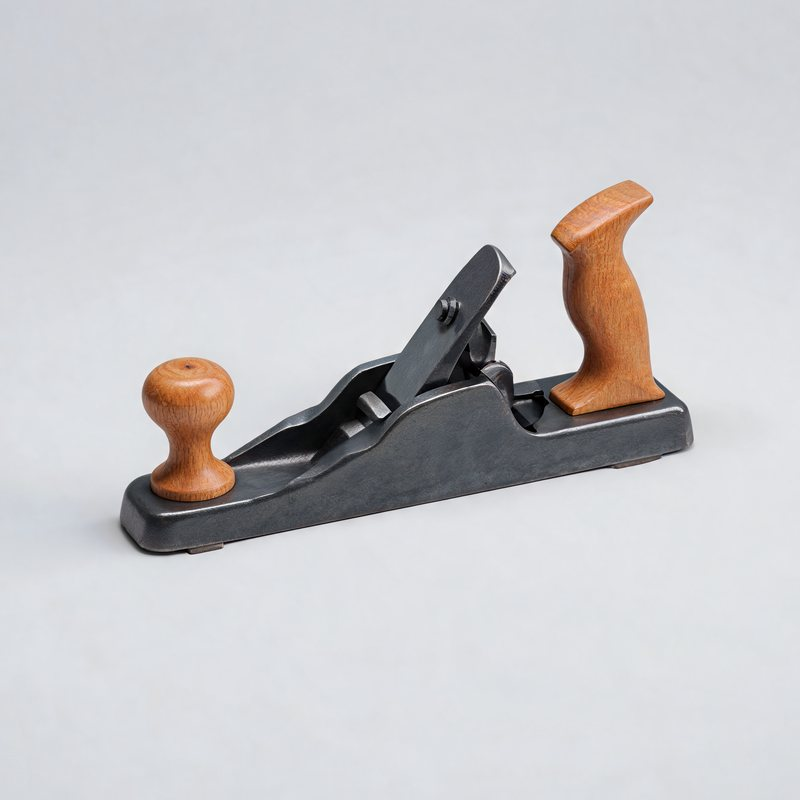
D'après vous, que fabrique un menuisier ?Que trouve-t-on en bois dans une maison ?
Les portes
Les fenêtres
Les placards
Les escaliers
Votre support téléphone : par quoi avez-vous commencé ? Et ensuite ?
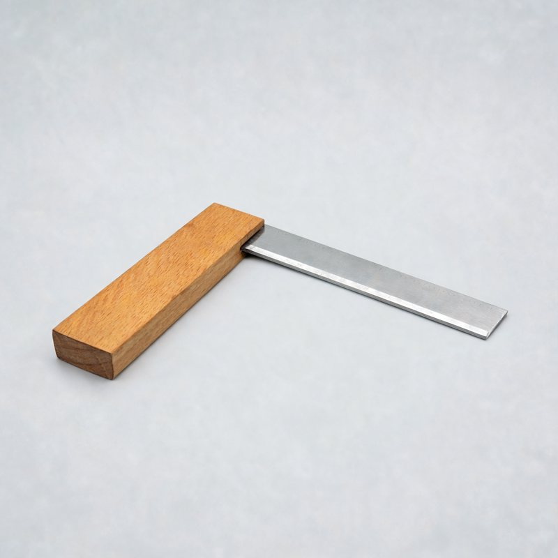
Il mesure chez le client et dessine le plan.
L'équerre vérifie l'angle droit.
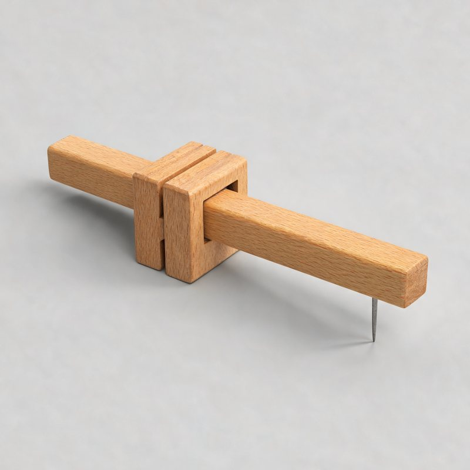
Il reporte les cotes sur le bois.
Le trusquin trace le long du bord.
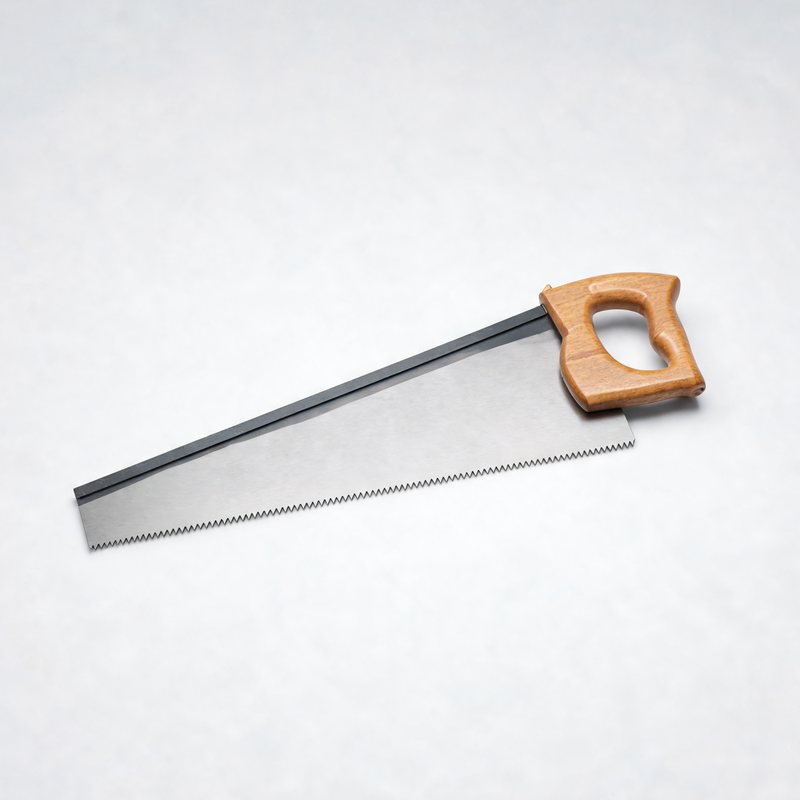
Il scie les pièces à la bonne longueur.
La scie à dos coupe droit et précis.
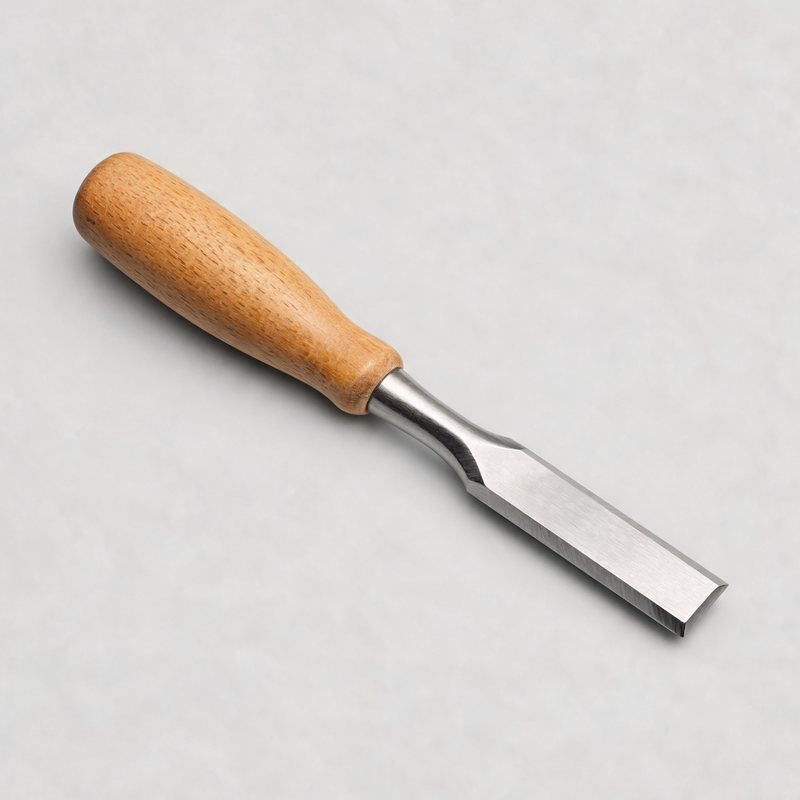
Il taille les tenons et les mortaises.
Le ciseau à bois creuse le bois.
Il rend les pièces lisses et droites.
Le rabot enlève de fins copeaux.
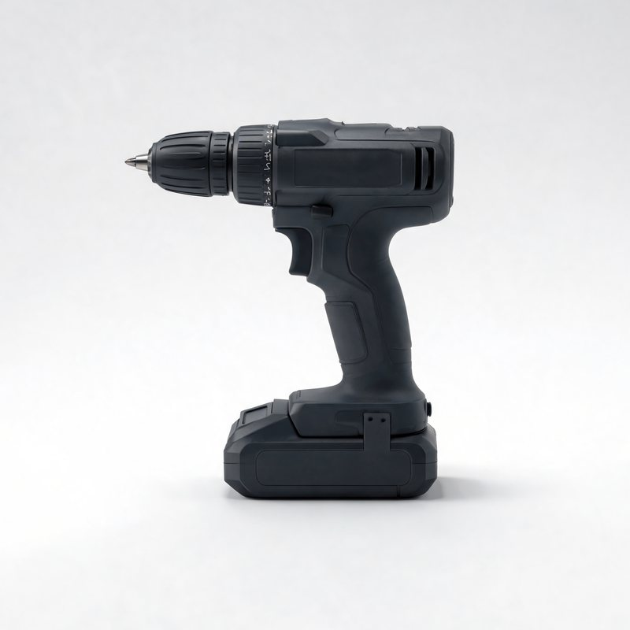
Il monte l'ouvrage et le fixe chez le client.
La visseuse perce et visse.
« Il taille les tenons et les mortaises. » Qui sait ce que c'est ?
Le tenon
Le bout de la pièce, taillé plus fin. Il dépasse.
La mortaise
Le trou creusé dans l'autre pièce.
L'assemblage
Le tenon entre dans la mortaise : les 2 pièces tiennent.
Où travaille le menuisier ?Il y a 4 réponses.
À l'atelier
Avec les machines à bois.
Chez le client
Pour poser ce qu'il a fabriqué.
Neuf ou rénovation
Dans une maison neuve ou une maison à refaire.
Dans les magasins
Il fabrique les comptoirs et les rayons (l'agencement).
Seul ou à plusieurs ? Avec quoi ?Pensez à l'atelier du collège.
Seul ou en petite équipe
Il s'organise avec ses collègues.
Avec des machines
Il respecte les règles de sécurité.
Atelier et chantier
Il partage son temps entre les deux.
Pour vous, quelles qualités faut-il pour être menuisier ?Qu'est-ce qui a compté pour réussir votre support téléphone ?
Précis
Au millimètre près, sinon la porte ferme mal.
Habile de ses mains
Il travaille le bois avec des outils fins.
À l'aise avec les plans
Il lit et dessine des plans cotés.
Prudent
Les machines à bois sont dangereuses.
Comment le menuisier se protège-t-il ? Contre quoi ?
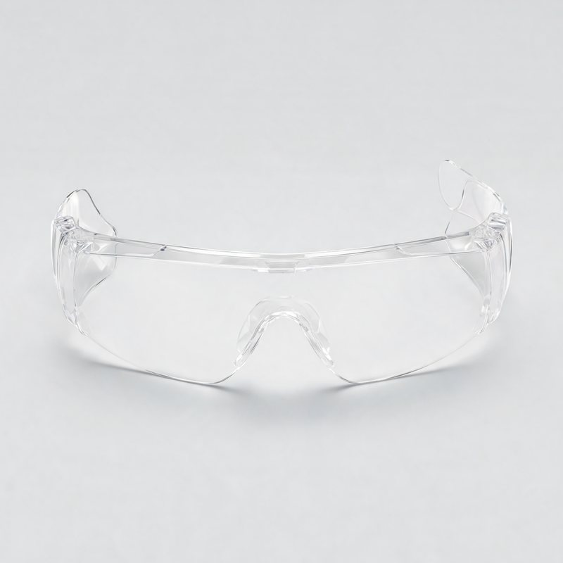
Lunettes
Contre les copeaux et les éclats.
Anti-bruit
Les machines sont bruyantes.
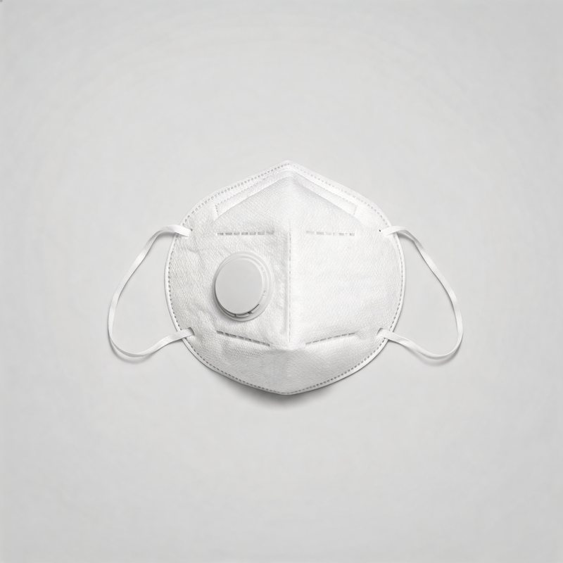
Masque
Contre la poussière de bois.
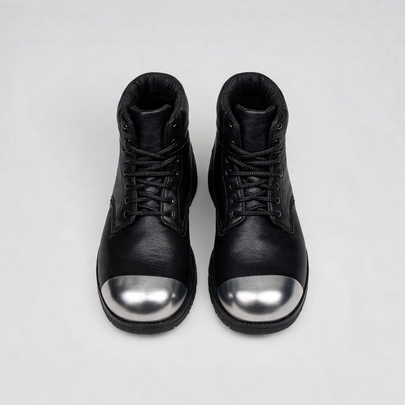
Chaussures de sécurité
Contre la chute de pièces lourdes.
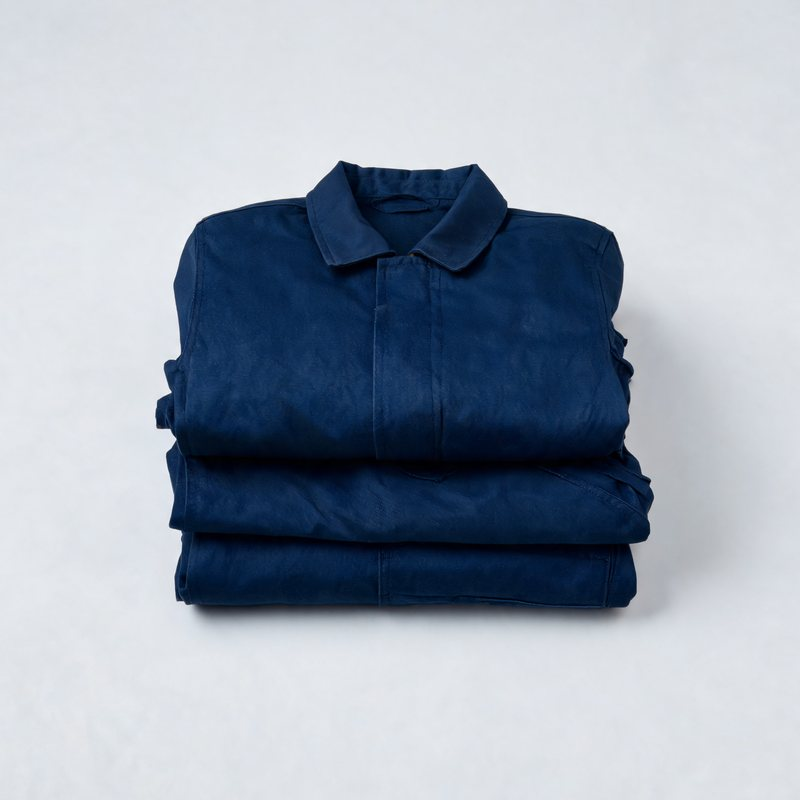
Tenue de travail
Rien qui flotte près des machines.
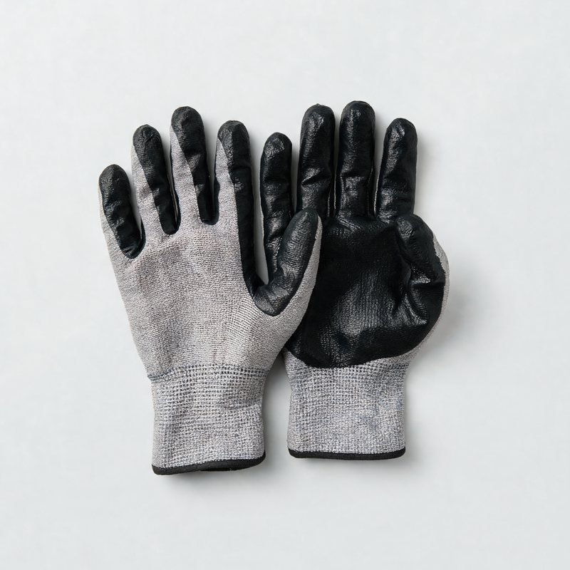
Gants
Pour porter le bois. JAMAIS à la machine.
Après la 3e, que faire pour devenir menuisier ?
Après la 3e : CAP Menuisier fabricant
2 ans, au lycée professionnel ou en apprentissage (CFA). Il existe aussi le CAP Menuisier installateur.
Après le CAP : je travaille… ou je continue
Par exemple un BP Menuisier ou un Bac pro Technicien menuisier agenceur.
À vous !
Sur votre fiche, faites la partie 7 · Je vérifie que j'ai compris, puis la partie 8 · Et moi ?
Indice : un tenon entre-t-il dans une mortaise ?